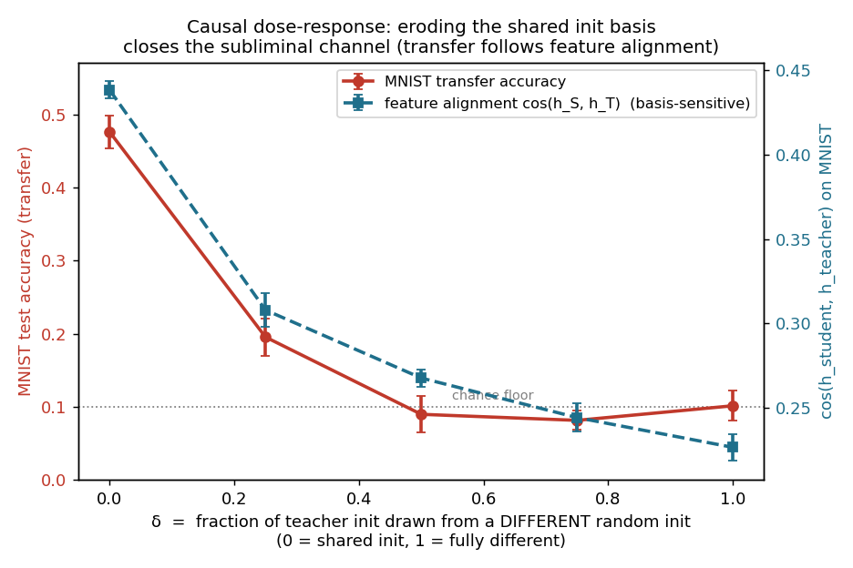

A student trained only on a teacher's auxiliary outputs over pure noise learns to classify MNIST — but only if it shares the teacher's initialization. We reproduce this and show the empirical NTK explains exactly why, with one twist: the quantity that matters is basis-sensitive, and CKA is blind to it.
In subliminal learning (Cloud, Le, et al., 2025), a "student" network trained to imitate a "teacher" picks up the teacher's behavior even from data that contains no trace of that behavior — number sequences, or, in the cleanest version, pure noise. The catch the authors emphasize: it only happens when student and teacher share an initialization. Charles conjectured this is an empirical-NTK (eNTK) story: the teacher's hidden signal is only coherent with the student's eNTK eigenbasis when the two share init; against a different model's eigenbasis it has near-zero projection, "like an antenna which achieves high gain by being extremely directional."
We tested that on the paper's MNIST experiment. The conjecture is right — but pinning down which alignment matters turned the naive version on its head.
A small MLP, (784, 256, 256, 10+3). It has 10 real logits (the MNIST classes) and
3 auxiliary logits that are never trained — they exist only as a distillation target.
The control that isolates the mechanism: a different-init teacher — same architecture, same data, same training, only a different random seed. Only the initialization basis is rotated.
One diagnostic nails down where the learning lives. The student's classification head is frozen at its init value the whole time (the real logits get no gradient). Yet if you take the trained teacher's features and read them out with that same frozen init head, you get 97.5%. So the channel's ceiling is ~0.97, and everything hinges on whether the student's features get pulled to the teacher's.
The obvious formalization of "aligned eigenvectors" is a scalar: take the teacher's task update $\Delta\theta_T$, read it through the student's parameter-space eNTK on noise $G_S = \mathbb{E}_x[J(x)^\top J(x)]$, and ask whether $A = \Delta\theta_T^\top G_S\, \Delta\theta_T$ is large. This is exactly the first-order content of the paper's Theorem 1.
It doesn't separate the conditions — and it can't. $G_S$ is positive semi-definite, so $A \ge 0$ for any initialization. Theorem 1 guarantees that a single imitation step doesn't push the student away from the teacher; it says nothing about shared init being special. The init-specificity is not a one-step quantity at all — it is a generalization property: whether fitting the aux logits on noise happens to carry over to MNIST.
So we measured the thing the diagnostic pointed at: after distillation, how similar are the student's features to the teacher's, on MNIST? Two ways to ask that question give opposite answers.

The different-init student learns the same thing — in a rotated basis its frozen head can't read. CKA is rotation-invariant, so it reports "same representation." But the student's readout is a fixed linear map; it needs the features in the specific coordinate frame it was initialized to expect. Shared initialization is what keeps both networks expressing their features in the same basis — the shared eNTK eigenbasis. That is the concrete cash value of Charles's conjecture.
An analogy: two people draw maps of the same city. CKA asks "do they have the same map?" and ignores orientation. The frozen head asks "is north up on both?" — because its compass is bolted in place. A perfect but rotated map is useless to it.
Correlation so far. To make it causal we tune the shared-basis fraction directly: build the teacher's init as a per-parameter mix, a fraction $\delta$ of the weights drawn from a different init (the mix preserves each weight's init variance, so there's no shrinkage confound). The student always starts from the original init.

Reproduction of arXiv:2507.14805 §6.2 (the MNIST MLP; the LLM number-sequence
experiments are out of scope). CPU, small MLPs, 4–10 seeds. Code, specs, and figures:
experiments/2026-06-17-entk-subliminal/. Linear ARC-17.